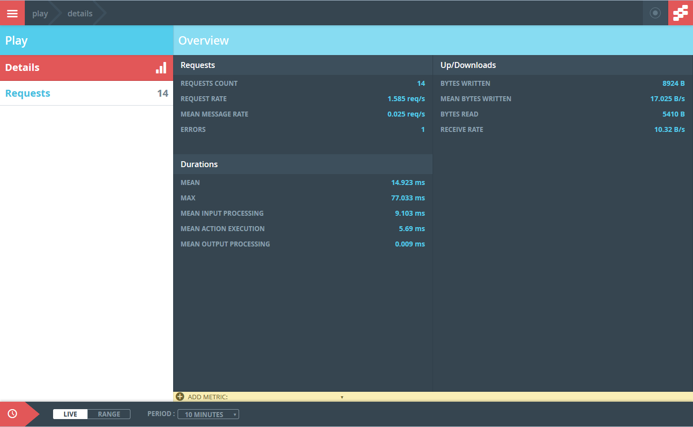
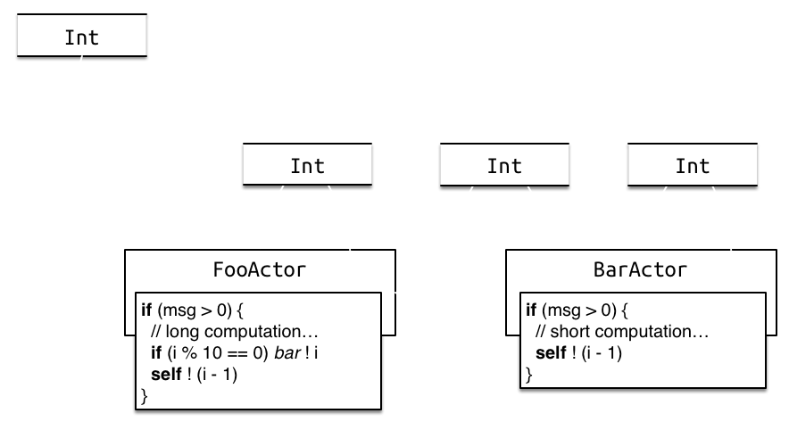

So, tell me again
how everything's fine in production!
Monitoring gives an insight into the performance and flow of an application,
allowing us see pain points, and areas of poor performance: increasing our visibility to what is occuring.
The aim is 24/7 uptime, preventing the big boom! How do you know that something's broken in time to do something about it? It is insufficient to monitor HTTP 500s, we want to have a bit of time ahead of the 500s to do something.
Worked fine in dev—ops problem now!
We create actor systems in Akka (perhaps with REST APIs in Spray); modern web applications in Play, and we all like to think that these applications will attract thousands billions of users.
So are you ready for production?
Here at Scala Days we have seen some great talks, so I bet you're itching to get back and do some coding. But what happens when you have created the next Netflix? Unfortunatly, Akka does not solve all of the woes of running in production, you still need to keep an eye on your stack.
What is happening inside the application?
Do we have any hotspots in our actor system?
Are the message queues getting too big? (Are the messages spending too much time in the queues?)
Do we have enough threads, and are the threads being blocked?
What to Monitor
You want to see inside the Akka, Play Framework or Spray and know what is happening in the system's components.
Number / rates of messages
Sizes of queues
Duration of messages in queue
Time it takes to execute the receive PF
Number / rates of failures
The threads in the thread pools
What metrics do you want to see, when the app is in production.
During our consultancy, customers often complain that actors are black boxes. It is difficult to understand what the application is doing; especially if they come from a traditional JEE background.
Typesafe Console!

Typesafe Console! It looks great, and it gives in-depth stats on the actor system.
Typesafe Console!
Brilliant, looks great, under low load its really impressive. We loved it, but ...
Production—unusable: volume of data produced, memory footprint, I/O
Development—great: gives in–depth view of the actor system
But it records too much data and just eats resource when doing performance tests.
In summary:
* production is a no go
* development is recomended, great for tracing the flow through the actor system.
Reactive Monitor
We wanted to record just enough information. Too much slows down the monitored system, too little lets events go unnoticed.
And we wanted to have a flexible mechanism to deliver the collected monitoring information.
Actor creation & destruction.
Message types, message rates, failures and performance at the actor level
Queue size at the (local) actor level
The number of available and running threads in the ThreadPools
We liked the Typesafe Console, but we needed an alternative solution for the client. So, we scratched our own itch, and made the open source Reactive Monitor. Instead of targetting only statsd (with Datadog), we split the agents and the outputs.
At the highest level, the architecture is:
We monitor
val system = ActorSystem()
val x = system.actorOf(Props[XActor])
val y = system.actorOf(Props[YActor])
x ! "foo"
y ! "foo"
y ! 42
With this code, what sort of metrics can you get with our monitoring tool?
We monitor
x ! "foo"; y ! "foo"; y ! 42
We monitor
val system = ActorSystem()
val x = system.actorOf(Props[XActor])
val y = system.actorOf(Props[YActor])
x ! "foo"
y ! "foo"
y ! 42
Remember, we do not want to have to modify our source code, nor do we want to maintain a custom
fork of Akka, Play, Spray, ...!
You source code stays the same...
AspectJ
It allows us to instrument Akka's and Play's bytecode as it is loaded by the ClassLoaders. We can do
anything we like, as long as the instrumented bytecode verifies.

This is how we apply the agents into the application being monitored. We used AspectJ LTW to monkey-patch Akka's, Spray's and Play's JARs. This means that there are no custom builds of Akka, Spray or Play!
AspectJ
To turn on LTW, set the -javaagent JVM parameter, and add /META-INF/aop.xml.
<aspectj>
<aspects>
<aspect name="ActorCellMonitoringAspect"/>
<aspect name="DispatcherMonitoringAspect"/>
</aspects>
<weaver options="-verbose -showWeaveInfo">
<include within="akka.actor.*"/>
<include within="akka.dispatch.*"/>
<include within="scala.concurrent.*"/>
<include within="java.util.concurrent.*"/>
</weaver>
</aspectj>
aop.xml tells the weaver where to unleash its monkey-patching magic. In other words, we restrict the scope of the work that the weaver has to do.
AspectJ
public aspect ActorCellMonitoringAspect {
Object around(ActorCell actorCell, Object msg) :
call(* a.a.ActorCell.receiveMessage(..))
&& args(msg) && target(actorCell) {
// check configuration to see if we're interested
// publish 'delivered' events
// measuring performance
Object result = proceed(actorCell, msg);
// return null would do, but we are _proper_.
return result;
}
}
AspectJ
public aspect DispatcherMonitoringAspect {
before(ExecutorService es) :
call(* j.u.c.ExecutorService+.execute(..))
&& target(es) {
// publish 'active threads' count
// publish 'running threads' count
}
}
Agents
Akka - measuring actor instances, their performance, failures, messages, message queues and threadsSpray - measuring the HTTP requests, and bytes transferredPlay - measuring the HTTP requests, controller performance and failures
Nota bene that Spray is based on Akka, so the I/O traffic is in addition to everything that the Akka agent measures
The agents are essentially a collection of aspects that instrument the interesting methods in their target, and report the information they collected to the configured output module.
Akka Agent
We have some specific instrumenation around some of the useful intractions in the Akka framework, including support for both the Java and Scala Api's
Actor instances
Avergage time in onRecieve()
Mailbox size
Mailbox duration
Number of Exceptions
Executor / Thread data
instrumentation around specific akka interactions, i,e Actor Count, Avg OnRecieve ...
Play Framework Agent
Instrumenation around some of the useful intractions in the Play Framework, including support for both the Java and Scala Api's
Number of Requests
Number of Exceptions
instrumentation around specific Play interactions, i,e Request Count grouped by Route / Path, Error / Exception count...
Spray Agent
Provides instrumenation for the Spray libraries
Number of Requests
Number of Exceptions
* In addition to all of the Akka Agent metrics
Provide the hooks and instrumenation around around the spray Api, i,e Request Count grouped by Route / Path, Error / Exception count. in addtiion to all the metrics you get with the Akka agent...
Output modules
The aspects load configurable output modules. We scratched our own itch by implementing the statsd / Datadog output module, but we have two more!
statsd (with Datadog extensions)
DTrace (on Solaris, dummy elsewhere)
Codahale Metrics
Statsd
Really simple transport: strings up to 508 bytes long over UDP.
aspect ':' value '|' type '|#' tag1 ',' tag2 ',' ...
For example, in our application
akka.actor.delivered:50|c|#↩
akka://default/user/x,akka.type:default.org...XActor
akka.actor.delivered.Integer:50|c|#↩
akka://default/user/x,akka.type:default.org...XActor
akka.actor.duration:99|ms|#↩
akka://default/user/x,akka.type:default.org...XActor
statsd is a light-weight UDP-based protocol to send tracing information to anything that can understand the datagrams. The datagrams carry specifically-formatted strings. Hence Datadog (and others) can offer extensions to the standard stasd formats easily.
The type can be either 'c' for count—increments and decrements, 'g' for gauge—absolute value, and 'ms' for execution time.
We can get away with this—the minimum MTU on the internet is 576, the size of the IPv4 header at most 60 bytes, and the UDP header 8 bytes. This leaves 508 bytes available for the monitoring data.
Statsd
Most statsd tools can show very pretty charts.
There are plenty of tools that can listen for the statsd datagrams, and analyse the data. Typically, they have pretty user interfaces, charts, alerts, ...
Statsd
class StatsdActor(remote: InetSocketAddress,
prefix: String) extends Actor {
IO(Udp) ! Udp.SimpleSender
def receive: Receive = {
case Udp.SimpleSenderReady =>
context.become(ready(sender))
}
def ready(send: ActorRef): Receive = {
case stat: StatsdStatistic =>
val payload = toByteString(stat, prefix)
send ! Udp.Send(payload, remote)
}
}
In keeping with the asynchronous approach, the I/O that this output module produces is isolated in its own ActorSystem. This means that the output module has as little impact on your application as possible.
its also note worthy that the datagrams are sent over UDP so even at a low level there is no blocking as the Ststad client is not waiting for an ack of the message.
so in summary, Statsd is lightwieght, simple first impl was only 137 lines long, widly supported, DataDog, Graphite etc.
DTrace
DTrace is kernel-level, production-ready, minimal-impact tracing mechanism.
$ sudo dtrace -l
ID PROVIDER MODULE NAME
1 dtrace BEGIN
2 dtrace END
3 dtrace ERROR
4 nfsmapid804 nfsmapid daemon-domain
5 kerberos800 mech_krb5.so.1 krb_ap_rep-make
...
33 akka2083 java_tracing all-gauges
34 akka2083 java_tracing execution-time
35 akka2083 java_tracing all-counters
There are ports of DTrace from Solaris to Linux, NetBSD and others. Reactive Monitor adds probes using JVM's tracing APIs, and even though for example OS X includes dtrace, the JVM on OS X does not "talk" to dtrace.
DTrace's probes are roughly comparable to pointcuts: that is, they point to a specific location in execution flow. When the execution hits the probe, it fires.
One writes D programs that attach to the firing probes and execute C-like code. In the bodies of the probes, you can do arbitrary operations. Imagine, for example, being able to automatically modify the zone's CPUs, memory, and so on! In fact, this is what we're working on with Joyent. So go ahead and take a peek!
DTrace
The actual interface relies on the internal tracing API that the Oracle JDK and OpenJDK provides.
@ProviderName("akka")
public interface DtraceCounterProvider
extends com.sun.tracing.Provider {
@FunctionName("Receive execution time")
@ProbeName("execution-time")
void executionTime(String name, int length,
int duration);
...
}
The annotations and the Provider interface itself are internal APIs; also notice that we have to be careful when sending the Strings, and include the string's length and be sure that the character encoding is known. This will all become really important when we take a look at the D script that follows.
We then use JDK's tracing provider to get a JDK proxy that conforms to our interface, that—on Solaris—creates the DTrace entries when we call the interface's methods. Outside Solaris, we get a dummy implementation of this interface. We tried this on latest OS X, latest Ubunbu, latest CentOS, and Solaris 11; all with Oracle's JDK, and OpenJDK on OS X.
DTrace
The D program needs to copy in data from kernel space to the user space where the program runs.
akka$1:::exeucution-time {
printf("execution time: %s -> %d",
stringof(copyin(arg0, arg1 + 1)), arg2);
}
akka$1:::all-counters {
printf("counter: %s -> %d",
stringof(copyin(arg0, arg1 + 1)), arg2);
}
$ sudo dtrace -s script.d `pgrep java`
Notice in particular the copyin and stringof calls. The first one deals with copying kernel memory from the pointer arg0, taking arg1 bytes. This is exactly the place where one needs to be aware of string encoding (anyone fancies using unicode names for actor names?)
Codahale Metrics
A metrics library in Java (and Scala) that allows us to deliver measurement types similar to
what statsd can do.
Unlike statsd, Metrics is the entire monitoing framework. It processes the information it receives, performs
the calculations we want, and exposes the measurements.
It can expose the data using Ganglia (!!), statsd (!!), console, CSV, JMX, HTTP; all that you have to do is to bring in the specific dependencies, in addition to the output-codahalemetris module from Reactive Monitor
Codahale Metrics
class MetricsCounterInterface
extends CounterInterface with MetricsHandler {
def registry: MetricRegistry = ...
def marshaller: NameMarshaller = ...
def recordExecutionTime(aspect: String,
duration: Int,
tags: String*): Unit =
updateExecutionTime(aspect, duration, tags)
...
}
Configuration
The aspects need configuration for the agent s and output s.
Decide which actors to monitor
How to aggregate the monitoring data
How to deliver the monitoring data
Configuration
Typesafe Config-style files at well-known locations configure the agent and output modules.
/META-INF/monitor/agent.conf for the agent/META-INF/monitor/output.conf for the output
Configuration
org.eigengo.monitor.agent {
output.class: "org...StatsdCounterInterface"
akka {
included: [
"akka:default.org...SimpleActor",
"akka://default/user/x"
]
sampling: [
{ rate: 5, for: [ "akka://default/user/*" ] }
]
}
}
Configuration
org.eigengo.monitor.output.statsd {
prefix: ""
remoteAddress: "localhost"
remotePort: 8125
refresh: 5
initialDelay: 5
constantTags: []
}
org.eigengo.monitor.output.codahalemetrics {
registry-class: "org...DefaultRegistryProvider"
naming-class: "org...DefaultNameMarshaller"
prefix: ""
refresh: 5
}
Demo
Let's add monitoring to statsd & Datadog to an Akka application

War stories?
What have we learnt in building the Reactive Monitor?
What have we learnt in building a large Akka system?
Well, yes it is possible to Monitor too much, you need to be pragmatic over the metrics you want to record and you should always `sample`. Nothing comes for free, the more you monitor the more data is sent over the wire the more computation that is performed.
But it is a nessarary evil, the visibility and the insight into the app montoring provides is invaluable in production.
So one of our clients hired us to write a large Akka system that could serve millions of requests a day, early on in the project we had enough functionlaity to start running some performance tests.
Im sure this has happended to all of us at some point in the past, your first performance tests just sit there, not really taking hardware resource, essentially just "blocking".
We saw via the monitor mailbox queues growing, mean-time in 'onRecieve()' being too high. arrrrhhhhh...
Analysed the architecture
CPU-intensive (XML parsing)
Non-reactive / blocking third-party libraries (DB drivers, ....)
Reactive libraries (Async HTTP)
So we looked at the architecture, as in most big systems, we had a mixed bad of tech:
CPU-intensive - Churning through lots of Data, big XML files, Big Data problems
Non-reactive - Legacy code, Blocking Libraries database integration etc...
lots of Awesome Reactive stuff, Async Http, async db drivers all none blocking.
and of cause then Actor system its self. This all looked good, we had split the functional areas up into Actors or Sets of Actors all seemed nicely cohesive.
Then light bulb momment...
Bulkhead the operations
Isolated the actor system into functional areas:
Legacy blocking code - PinnedDispatcher
CPU intensive code - BalancingDispatcher
Remaining reactive code - fork-join-executor / executor
Creating different dispatchers for the unruly code
Letitcrash.com -> tuning-dispatchers-in-akka-applications
Bulkheading - So, we needed to bulkhead the app, we had it logically seperated in the architecture, but we still had the example app dispatcher config.
legacy Code - blocking code that we wanted to issolate -
CPU intensive - didn't want this code to starve the actor system
Everything else can have a shared pool
Deciding on the best dispatcher for a given actor is tricky and a lot of reading needs to be done, there are some bad blogs outthere but the blog from the typesafe guys is a good place to start.
Nearly over!
Remember...
Visibility is King
Monitor only what you need
Don't wait for the Big Boom!
Bulkhead your application
Happy coding...
Bulkhead - Remember Akka 101 apps dont provide `Production` ready config
Thank you!
Law of Murphy for devops: if thing can able go wrong, is mean is already wrong but you not have Nagios alert of it yet.